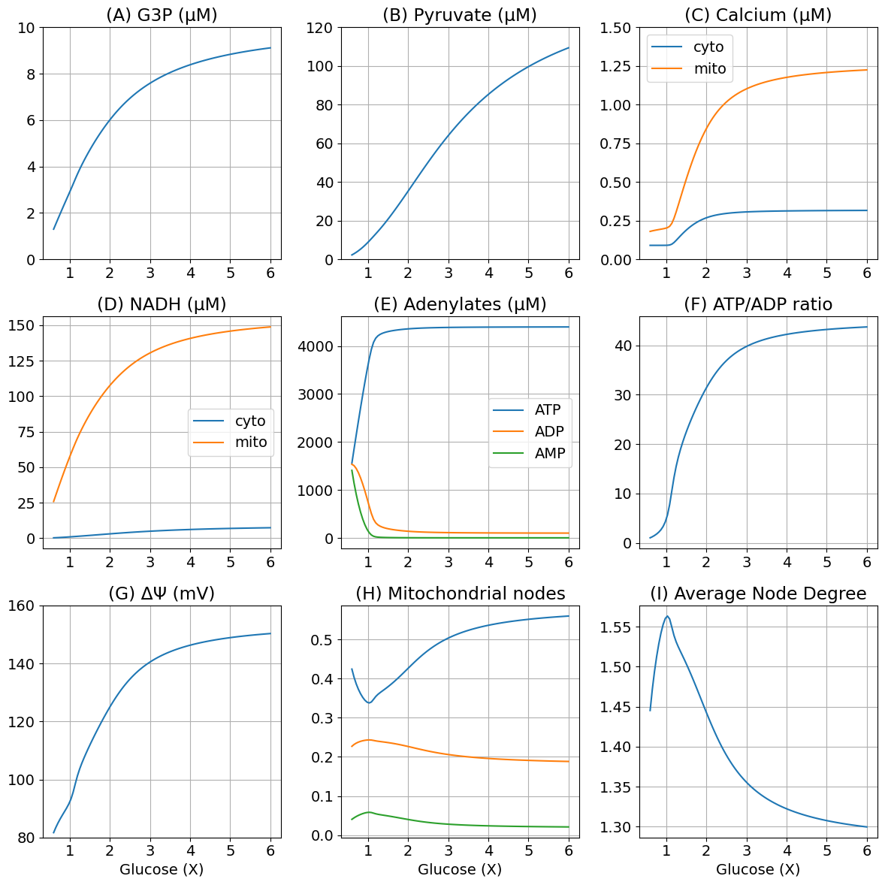
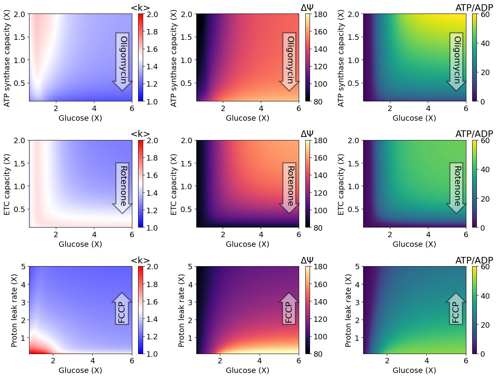

Figure 2 and 3
Contents
Figure 2 and 3#
Figure 2#
using DifferentialEquations
using ModelingToolkit
using MitochondrialDynamics
using MitochondrialDynamics: GlcConst, G3P, Pyr, NADH_c, NADH_m, ATP_c, ADP_c, AMP_c, Ca_m, Ca_c, x, ΔΨm, degavg
import MitochondrialDynamics.Utils: second, μM, mV, mM, Hz
import PyPlot as plt
rcParams = plt.PyDict(plt.matplotlib."rcParams")
rcParams["font.size"] = 14
# rcParams["font.sans-serif"] = "Arial"
# rcParams["font.family"] = "sans-serif"
┌ Info: Precompiling MitochondrialDynamics [1a231dcf-63c2-466e-8f46-4027ba595b90]
└ @ Base loading.jl:1662
14
@named sys = make_model()
pidx = Dict(k => i for (i, k) in enumerate(parameters(sys)))
idxGlc = pidx[GlcConst]
# Empty array = using default u0
prob = SteadyStateProblem(sys, [])
SteadyStateProblem with uType Vector{Float64}. In-place: true
u0: 10-element Vector{Float64}:
0.057
0.001
0.0002
0.092
0.0029
0.0087
3.595
0.148
0.24
0.06
glc = range(3.0mM, 30.0mM, length=101) # Range of glucose
function remake_glc(prob, g)
p = copy(prob.p)
p[idxGlc] = g
remake(prob; p=p)
end
sols = map(glc) do g
solve(remake_glc(prob, g), DynamicSS(Rodas5()))
end
101-element Vector{SciMLBase.NonlinearSolution{Float64, 1, Vector{Float64}, Vector{Float64}, SteadyStateProblem{Vector{Float64}, true, Vector{Float64}, ODEFunction{true, ModelingToolkit.var"#f#460"{RuntimeGeneratedFunctions.RuntimeGeneratedFunction{(:ˍ₋arg1, :ˍ₋arg2, :t), ModelingToolkit.var"#_RGF_ModTag", ModelingToolkit.var"#_RGF_ModTag", (0x25abb4b4, 0x899674fe, 0x0cdfc48a, 0x7bf095de, 0x524d2778)}, RuntimeGeneratedFunctions.RuntimeGeneratedFunction{(:ˍ₋out, :ˍ₋arg1, :ˍ₋arg2, :t), ModelingToolkit.var"#_RGF_ModTag", ModelingToolkit.var"#_RGF_ModTag", (0xed8ec384, 0x66a3230c, 0x22abfae5, 0x2ec4972c, 0xe9bdd158)}}, LinearAlgebra.UniformScaling{Bool}, Nothing, Nothing, Nothing, Nothing, Nothing, Nothing, Nothing, Nothing, Nothing, Nothing, Vector{Symbol}, Symbol, ModelingToolkit.var"#generated_observed#465"{ODESystem, Dict{Any, Any}}, Nothing}, Base.Pairs{Symbol, Union{}, Tuple{}, NamedTuple{(), Tuple{}}}}, DynamicSS{Rodas5{0, true, Nothing, typeof(OrdinaryDiffEq.DEFAULT_PRECS), Val{:forward}, true, nothing}, Float64, Float64, Float64}, Nothing, Nothing}}:
[0.025912614858365116, 0.00032772390873098844, 0.00018020045191309073, 0.08166356296166412, 0.0012977714285929269, 0.0022434182647703767, 1.557463994824748, 1.4078664055557777, 0.22706306631272258, 0.04051083295237818]
[0.030370388891352962, 0.00040043259716400427, 0.0001836640309074007, 0.0834253190048145, 0.0015192762449253484, 0.002877086527868558, 1.8528071222081033, 1.140576937177758, 0.23172620412268305, 0.04437313550980277]
[0.034784261646897685, 0.0004781955145374722, 0.0001867125086227731, 0.08497347059956561, 0.0017392921123970406, 0.003588028279778476, 2.144566766378418, 0.908668930361456, 0.23517278253979806, 0.04769198450916469]
[0.03913871275138111, 0.0005610074639311449, 0.0001894676465144987, 0.08636934612245172, 0.0019574460069807487, 0.004376861930401216, 2.431371904403379, 0.7084345285017877, 0.23776088727504865, 0.05057078781129496]
[0.04341752883196238, 0.0006487709007486093, 0.00019203209501131462, 0.08766274855187102, 0.0021734100413444307, 0.005243210501563186, 2.711764593165233, 0.5372671413062966, 0.2397541817409595, 0.053030763120368335]
[0.04760650672319263, 0.000741324246011175, 0.0001945199141302296, 0.08890477136146858, 0.0023870942844428046, 0.0061858999710739035, 2.9842228574257823, 0.3931666236695684, 0.24127084431753276, 0.055110992076726366]
[0.05169523944209663, 0.0008384547242452733, 0.00019710434266825944, 0.09016294095081433, 0.0025988460894333064, 0.007203023137875576, 3.2469628413506006, 0.27453427876206427, 0.2423798366797131, 0.05679673038832427]
[0.05567930691142589, 0.0009398988196302366, 0.00020013808571151453, 0.09154777134564544, 0.0028097658270134786, 0.008291753094929624, 3.497304316687632, 0.18012174573127815, 0.24311538533730703, 0.057981840952037636]
[0.05956350377863114, 0.0010453054227960315, 0.00020453807240110948, 0.09325946395981684, 0.0030221816853614075, 0.009447121272609918, 3.7297668903511836, 0.10910397692827521, 0.243397663707733, 0.0584564544298469]
[0.0633591292175717, 0.0011540297210156456, 0.0002130349110452644, 0.0955916143156463, 0.0032393567698342203, 0.010656265743352895, 3.9309454139222475, 0.061106944026118444, 0.24304951914082887, 0.05787193474976126]
[0.06704149222982903, 0.0012646438952563276, 0.0002317617769555637, 0.09851038236041802, 0.0034599621737082405, 0.011887345463341335, 4.076959700433229, 0.03447749557129983, 0.24205471304099835, 0.056284408607897685]
[0.07053276270806262, 0.0013757320048633553, 0.0002641652552632706, 0.10128338306296213, 0.003673792551434977, 0.013117880958265453, 4.162450692131949, 0.022237279541383076, 0.24094410066037333, 0.05464941863874396]
[0.0738217756006468, 0.001487434063493511, 0.0003054786904594573, 0.10358724196582544, 0.0038757148676325614, 0.014367636740464167, 4.211119845516151, 0.016412744424602957, 0.2400532728063498, 0.053412445812370396]
⋮
[0.14720391210518738, 0.007154677093224379, 0.0012156092618252506, 0.1495810721964046, 0.00896223491058857, 0.10402727324788211, 4.3966092928085745, 0.00216957270584809, 0.1898367247370215, 0.02163440358439158]
[0.1473659904888256, 0.007181553070317647, 0.0012165246101179374, 0.1496587152460384, 0.008977601278442939, 0.10456386753803194, 4.396676361256364, 0.002166784944339289, 0.18968493241909334, 0.02158205858779699]
[0.1475236910824059, 0.007207844390779904, 0.0012174126236905597, 0.1497340928473299, 0.008992606112103948, 0.1050897262667216, 4.396741297924522, 0.00216408746880182, 0.18953734938008168, 0.021531292024730413]
[0.14767717266855468, 0.00723356733160477, 0.0012182744254028185, 0.1498072951341939, 0.009007260737490596, 0.10560511214113485, 4.3968041971388425, 0.002161476202048117, 0.1893938174863741, 0.021482039586583162]
[0.14782658690291461, 0.007258737645064705, 0.0012191110795871456, 0.14987840773461458, 0.009021576041627514, 0.10611028111324658, 4.396865147886074, 0.0021589473026482307, 0.1892541861816592, 0.021434239859592474]
[0.14797207868970813, 0.0072833705763386564, 0.0012199235957301398, 0.14994751203946613, 0.00903556249277662, 0.10660548250696095, 4.396924234180291, 0.0021564971483912024, 0.18911831182396202, 0.021387834705153354]
[0.14811378653496235, 0.007307480880652584, 0.0012207129318839531, 0.1500146854528761, 0.009049230159506646, 0.10709095914935807, 4.396981535399902, 0.002154122321102729, 0.18898605731709694, 0.021342769043691475]
[0.1482518428788439, 0.007331082839928253, 0.0012214799978302006, 0.15008000162554835, 0.00906258872876367, 0.10756694750511135, 4.397037126597963, 0.002151819592692535, 0.18885729176062224, 0.021298990662753165]
[0.14838637440845429, 0.0073541902789386535, 0.0012222256580168179, 0.15014353067234648, 0.009075647523001731, 0.10803367781325335, 4.3970910787882085, 0.002149585912318015, 0.18873189013588568, 0.021256450002572532]
[0.14851750235234534, 0.007376816580971271, 0.0012229507342863643, 0.15020533937532798, 0.009088415516428673, 0.10849137422556455, 4.397143459208941, 0.0021474183945624586, 0.18860973300543957, 0.02121509996809111]
[0.1486453427579239, 0.007398974703002233, 0.0012236560084126946, 0.15026549137332051, 0.00910090135041877, 0.10894025494592943, 4.39719433156677, 0.0021453143085364557, 0.18849374310003678, 0.021167830703633844]
[0.148770006752842, 0.007420677190386528, 0.001224342224461264, 0.15032404733904392, 0.00911311334814032, 0.10938053237011201, 4.39724375626191, 0.002143271067820274, 0.18837777074368497, 0.021128603250582717]
extract(sols, k) = map(s->s[k], sols)
function plot_fig2(glc, sols; figsize=(12, 12))
glc5 = glc ./ 5
g3p = extract(sols, G3P) .* 1000
pyr = extract(sols, Pyr) .* 1000
ca_c = extract(sols, Ca_c) .* 1000
ca_m = extract(sols, Ca_m) .* 1000
nadh_c = extract(sols, NADH_c) .* 1000
nadh_m = extract(sols, NADH_m) .* 1000
atp_c = extract(sols, ATP_c) .* 1000
adp_c = extract(sols, ADP_c) .* 1000
amp_c = extract(sols, AMP_c) .* 1000
dpsi = extract(sols, ΔΨm) .* 1000
x1 = extract(sols, x[1])
x2 = extract(sols, x[2])
x3 = extract(sols, x[3])
deg = extract(sols, degavg)
fig, ax = plt.subplots(3, 3; figsize)
ax[1, 1].plot(glc5, g3p)
ax[1, 1].set(title="(A) G3P (μM)", ylim=(0.0, 10.0))
ax[1, 2].plot(glc5, pyr)
ax[1, 2].set(title="(B) Pyruvate (μM)", ylim=(0.0, 120.0))
ax[1, 3].plot(glc5, ca_c, label="cyto")
ax[1, 3].plot(glc5, ca_m, label="mito")
ax[1, 3].legend()
ax[1, 3].set(title="(C) Calcium (μM)", ylim=(0.0, 1.5))
ax[2, 1].plot(glc5, nadh_c, label="cyto")
ax[2, 1].plot(glc5, nadh_m, label="mito")
ax[2, 1].legend()
ax[2, 1].set(title="(D) NADH (μM)")
ax[2, 2].plot(glc5, atp_c, label="ATP")
ax[2, 2].plot(glc5, adp_c, label="ADP")
ax[2, 2].plot(glc5, amp_c, label="AMP")
ax[2, 2].legend()
ax[2, 2].set(title="(E) Adenylates (μM)")
ax[2, 3].plot(glc5, atp_c ./ adp_c)
ax[2, 3].set(title="(F) ATP/ADP ratio")
ax[3, 1].plot(glc5, dpsi, label="cyto")
ax[3, 1].set(title="(G) ΔΨ (mV)", ylim=(80, 160), xlabel="Glucose (X)")
ax[3, 2].plot(glc5, x1, label="X1")
ax[3, 2].plot(glc5, x2, label="X2")
ax[3, 2].plot(glc5, x3, label="X3")
ax[3, 2].set(title="(H) Mitochondrial nodes", xlabel="Glucose (X)")
ax[3, 3].plot(glc5, deg)
ax[3, 3].set(title="(I) Average Node Degree", xlabel="Glucose (X)")
for a in ax
a.set_xticks(1:6)
a.grid()
end
plt.tight_layout()
return fig
end
plot_fig2 (generic function with 1 method)
fig2 = plot_fig2(glc, sols);

# Uncomment if pdf file is required
# fig2.savefig("Fig2.tif", dpi=300, format="tiff", pil_kwargs=Dict("compression" => "tiff_lzw"))
Figure 3#
using DifferentialEquations
using ModelingToolkit
using MitochondrialDynamics
using MitochondrialDynamics: GlcConst, G3P, Pyr, NADH_c, NADH_m, ATP_c, ADP_c, AMP_c, Ca_m, Ca_c, x, ΔΨm, degavg, VmaxF1, VmaxETC, pHleak
import MitochondrialDynamics.Utils: second, μM, mV, mM, Hz
import PyPlot as plt
rcParams = plt.PyDict(plt.matplotlib."rcParams")
rcParams["font.size"] = 14
rcParams["font.sans-serif"] = "Arial"
rcParams["font.family"] = "sans-serif"
"sans-serif"
@named sys = make_model()
prob = SteadyStateProblem(sys, [])
pidx = Dict(k => i for (i, k) in enumerate(parameters(sys)))
idxGlc = pidx[GlcConst]
function solve_fig3(glc, r, protein, prob, alg=DynamicSS(Rodas5()))
idx = pidx[protein]
p = copy(prob.p)
p[idxGlc] = glc
p[idx] = prob.p[idx] * r
return solve(remake(prob, p=p), alg)
end
solve_fig3 (generic function with 2 methods)
rGlc1 = LinRange(3.0, 30.0, 50)
rGlc2 = LinRange(4.0, 30.0, 50)
rF1 = LinRange(0.1, 2.0, 50)
rETC = LinRange(0.1, 2.0, 50)
rHL = LinRange(0.1, 5.0, 50)
uInf_f1 = [solve_fig3(glc, r, VmaxF1, prob) for r in rF1, glc in rGlc1]
uInf_etc = [solve_fig3(glc, r, VmaxETC, prob) for r in rETC, glc in rGlc1]
uInf_hl = [solve_fig3(glc, r, pHleak, prob) for r in rHL, glc in rGlc2]
50×50 Matrix{SciMLBase.NonlinearSolution{Float64, 1, Vector{Float64}, Vector{Float64}, SteadyStateProblem{Vector{Float64}, true, Vector{Float64}, ODEFunction{true, ModelingToolkit.var"#f#460"{RuntimeGeneratedFunctions.RuntimeGeneratedFunction{(:ˍ₋arg1, :ˍ₋arg2, :t), ModelingToolkit.var"#_RGF_ModTag", ModelingToolkit.var"#_RGF_ModTag", (0x25abb4b4, 0x899674fe, 0x0cdfc48a, 0x7bf095de, 0x524d2778)}, RuntimeGeneratedFunctions.RuntimeGeneratedFunction{(:ˍ₋out, :ˍ₋arg1, :ˍ₋arg2, :t), ModelingToolkit.var"#_RGF_ModTag", ModelingToolkit.var"#_RGF_ModTag", (0xed8ec384, 0x66a3230c, 0x22abfae5, 0x2ec4972c, 0xe9bdd158)}}, LinearAlgebra.UniformScaling{Bool}, Nothing, Nothing, Nothing, Nothing, Nothing, Nothing, Nothing, Nothing, Nothing, Nothing, Vector{Symbol}, Symbol, ModelingToolkit.var"#generated_observed#465"{ODESystem, Dict{Any, Any}}, Nothing}, Base.Pairs{Symbol, Union{}, Tuple{}, NamedTuple{(), Tuple{}}}}, DynamicSS{Rodas5{0, true, Nothing, typeof(OrdinaryDiffEq.DEFAULT_PRECS), Val{:forward}, true, nothing}, Float64, Float64, Float64}, Nothing, Nothing}}:
[0.0430842, 0.000640168, 0.000194725, 0.0890084, 0.00215622, 0.0051562, 2.9879, 0.391369, 0.219547, 0.15167] … [0.222189, 0.0102844, 0.00161372, 0.188675, 0.00931746, 0.235225, 4.40905, 0.00168267, 0.240604, 0.0541803]
[0.0429866, 0.00063829, 0.000194326, 0.0888105, 0.00215119, 0.00513751, 2.94691, 0.411627, 0.23924, 0.1215] [0.196934, 0.00931991, 0.00155786, 0.182989, 0.00930404, 0.186896, 4.40838, 0.00170748, 0.22228, 0.0370778]
[0.0428879, 0.000636386, 0.000193933, 0.0886151, 0.00214614, 0.00511858, 2.90624, 0.432209, 0.246744, 0.103449] [0.181123, 0.00870519, 0.00150171, 0.177283, 0.00928694, 0.158736, 4.40749, 0.00174044, 0.21107, 0.0305462]
[0.0427879, 0.000634456, 0.000193546, 0.0884216, 0.00214106, 0.0050994, 2.86587, 0.453111, 0.249535, 0.0907047] [0.170978, 0.00830628, 0.00144949, 0.172004, 0.00926684, 0.141963, 4.40641, 0.00178071, 0.204189, 0.0272605]
[0.0426867, 0.000632498, 0.000193162, 0.0882299, 0.00213595, 0.00507996, 2.82579, 0.47433, 0.249951, 0.0809611] [0.16413, 0.00803507, 0.00140231, 0.167281, 0.00924442, 0.131294, 4.40518, 0.00182746, 0.199616, 0.0253076]
[0.0425841, 0.000630512, 0.000192782, 0.0880395, 0.0021308, 0.00506024, 2.786, 0.495864, 0.249023, 0.0731347] … [0.159258, 0.00784115, 0.00135989, 0.16309, 0.00922021, 0.124037, 4.40381, 0.00188014, 0.196321, 0.0240033]
[0.04248, 0.000628496, 0.000192405, 0.0878503, 0.00212559, 0.00504025, 2.74647, 0.517708, 0.247225, 0.0666721] [0.15563, 0.00769619, 0.00132152, 0.159363, 0.00919464, 0.118817, 4.40232, 0.00193834, 0.193784, 0.0230424]
[0.0423745, 0.000626449, 0.00019203, 0.087662, 0.00212034, 0.00501997, 2.70721, 0.539861, 0.244887, 0.0611911] [0.152826, 0.00758382, 0.00128652, 0.156032, 0.00916806, 0.114891, 4.40072, 0.00200177, 0.191714, 0.0222888]
[0.0422673, 0.000624371, 0.000191657, 0.0874744, 0.00211503, 0.00499938, 2.6682, 0.562319, 0.242177, 0.0564702] [0.150592, 0.00749408, 0.00125429, 0.153036, 0.0091408, 0.111832, 4.39903, 0.00207016, 0.189943, 0.0216702]
[0.0421585, 0.000622259, 0.000191286, 0.0872873, 0.00210966, 0.00497849, 2.62944, 0.58508, 0.239228, 0.0523332] [0.14877, 0.00742068, 0.00122434, 0.150324, 0.00911311, 0.109381, 4.39724, 0.00214327, 0.188378, 0.0211286]
[0.042048, 0.000620114, 0.000190916, 0.0871006, 0.00210422, 0.00495727, 2.59092, 0.608143, 0.236101, 0.0486815] … [0.147254, 0.00735944, 0.0011963, 0.147856, 0.00908524, 0.107371, 4.39538, 0.00222085, 0.186947, 0.0206504]
[0.0419357, 0.000617933, 0.000190546, 0.0869139, 0.00209871, 0.00493573, 2.55264, 0.631505, 0.232854, 0.0454265] [0.145971, 0.0073075, 0.00116985, 0.145599, 0.0090574, 0.105693, 4.39346, 0.00230265, 0.18561, 0.0202132]
[0.0418215, 0.000615716, 0.000190176, 0.0867273, 0.00209313, 0.00491384, 2.51458, 0.655164, 0.229547, 0.0424838] [0.144871, 0.00726284, 0.00114474, 0.143525, 0.00902974, 0.10427, 4.39147, 0.00238841, 0.184338, 0.0198061]
⋮ ⋱
[0.0378705, 0.00053987, 0.000179827, 0.0814735, 0.00190271, 0.00417647, 1.58735, 1.37919, 0.145984, 0.0105022] [0.135287, 0.00685993, 0.000694714, 0.117615, 0.00852414, 0.0926795, 4.33578, 0.00541528, 0.154962, 0.0122558]
[0.0376613, 0.000535934, 0.000179367, 0.0812392, 0.00189264, 0.00413882, 1.55324, 1.41195, 0.143062, 0.00997734] [0.135146, 0.00685347, 0.000681822, 0.117092, 0.00851149, 0.0925314, 4.33366, 0.00555376, 0.153911, 0.0120395]
[0.0374456, 0.000531884, 0.000178899, 0.0810008, 0.00188224, 0.00410016, 1.51916, 1.4452, 0.140152, 0.00947174] … [0.13501, 0.00684721, 0.000669165, 0.116585, 0.00849913, 0.0923907, 4.33154, 0.00569415, 0.152868, 0.0118282]
[0.0372229, 0.000527713, 0.000178422, 0.0807579, 0.0018715, 0.00406041, 1.48508, 1.47897, 0.137257, 0.00899061] [0.13488, 0.00684114, 0.000656736, 0.116092, 0.00848704, 0.092257, 4.32942, 0.00583655, 0.151833, 0.0116172]
[0.0369927, 0.000523414, 0.000177936, 0.0805102, 0.0018604, 0.0040195, 1.45099, 1.51328, 0.134374, 0.00852978] [0.134754, 0.00683525, 0.000644532, 0.115612, 0.00847521, 0.0921298, 4.32729, 0.00598106, 0.150808, 0.0114152]
[0.0367543, 0.000518976, 0.000177439, 0.0802573, 0.00184889, 0.00397737, 1.41687, 1.54817, 0.131501, 0.00808809] [0.134632, 0.00682952, 0.000632547, 0.115146, 0.00846362, 0.0920088, 4.32515, 0.00612781, 0.149794, 0.0112178]
[0.0365073, 0.000514391, 0.000176932, 0.0799988, 0.00183696, 0.00393393, 1.38269, 1.58367, 0.128635, 0.00766445] [0.134514, 0.00682394, 0.000620777, 0.114691, 0.00845225, 0.0918936, 4.323, 0.0062769, 0.148791, 0.0110287]
[0.036251, 0.000509647, 0.000176413, 0.0797343, 0.00182457, 0.00388907, 1.34844, 1.61985, 0.125775, 0.00725784] … [0.1344, 0.0068185, 0.000609217, 0.114248, 0.0084411, 0.091784, 4.32084, 0.00642847, 0.147794, 0.0108388]
[0.0359845, 0.000504732, 0.000175881, 0.0794631, 0.00181167, 0.0038427, 1.31407, 1.65674, 0.122918, 0.0068673] [0.134289, 0.00681318, 0.000597862, 0.113816, 0.00843014, 0.0916796, 4.31867, 0.00658265, 0.146807, 0.0106533]
[0.0357069, 0.00049963, 0.000175335, 0.0791846, 0.00179823, 0.00379469, 1.27956, 1.6944, 0.12006, 0.00649194] [0.134182, 0.00680798, 0.000586709, 0.113394, 0.00841936, 0.0915802, 4.31649, 0.00673961, 0.145829, 0.0104721]
[0.0354171, 0.000494326, 0.000174773, 0.0788981, 0.0017842, 0.00374488, 1.24487, 1.73291, 0.11719, 0.00612662] [0.134078, 0.00680289, 0.000575752, 0.112981, 0.00840875, 0.0914857, 4.31429, 0.00689948, 0.144864, 0.0102984]
[0.035114, 0.0004888, 0.000174193, 0.0786027, 0.0017695, 0.00369313, 1.20995, 1.77236, 0.114319, 0.00577776] [0.133977, 0.0067979, 0.00056499, 0.112578, 0.0083983, 0.0913957, 4.31208, 0.00706245, 0.143904, 0.0101245]
function plot_fig3(;
figsize=(13, 10),
levels=40,
cmaps=["bwr", "magma", "viridis"],
ylabels=[
"ATP synthase capacity (X)",
"ETC capacity (X)",
"Proton leak rate (X)"
],
cbarlabels=["<k>", "ΔΨ", "ATP/ADP"],
xxs=(rGlc1, rGlc1, rGlc2),
xscale=5.0,
yys=(rF1, rETC, rHL),
zs=(uInf_f1, uInf_etc, uInf_hl),
extremes=((1.0, 2.0), (80.0, 180.0), (0.0, 60.0))
)
# mapping functions
fs = (s -> s[degavg], s -> s[ΔΨm] * 1000, s -> s[ATP_c] / s[ADP_c])
fig, axes = plt.subplots(3, 3; figsize)
for col in 1:3
f = fs[col]
cm = cmaps[col]
cbl = cbarlabels[col]
vmin, vmax = extremes[col]
# lvls = LinRange(vmin, vmax, levels)
for row in 1:3
xx = xxs[row] ./ xscale
yy = yys[row]
z = zs[row]
ax = axes[row, col]
ylabel = ylabels[row]
mesh = ax.pcolormesh(
xx, yy, map(f, z);
shading="gouraud",
rasterized=true,
# levels=levels,
cmap=cm,
vmin=vmin,
vmax=vmax
)
ax.set(ylabel=ylabel, xlabel="Glucose (X)")
# Arrow annotation
# https://matplotlib.org/stable/tutorials/text/annotations.html#plotting-guide-annotation
if row == 1
ax.text(5.5, 1, "Oligomycin", ha="center", va="center", rotation=-90, size=16, bbox=Dict("boxstyle" => "rarrow", "fc" => "w", "ec" => "k", "lw" => 2, "alpha" => 0.5))
elseif row == 2
ax.text(5.5, 1, "Rotenone", ha="center", va="center", rotation=-90, size=16, bbox=Dict("boxstyle" => "rarrow", "fc" => "w", "ec" => "k", "lw" => 2, "alpha" => 0.5))
elseif row == 3
ax.text(5.5, 2.5, "FCCP", ha="center", va="center", rotation=90, size=16, bbox=Dict("boxstyle" => "rarrow", "fc" => "w", "ec" => "k", "lw" => 2, "alpha" => 0.5))
end
cbar = fig.colorbar(mesh, ax=ax)
cbar.ax.set_title(cbl)
end
end
plt.tight_layout()
return fig
end
plot_fig3 (generic function with 1 method)
fig3 = plot_fig3();
findfont: Font family ['sans-serif'] not found. Falling back to DejaVu Sans.
findfont: Generic family 'sans-serif' not found because none of the following families were found: Arial
findfont: Font family ['sans-serif'] not found. Falling back to DejaVu Sans.
findfont: Generic family 'sans-serif' not found because none of the following families were found: Arial
findfont: Font family ['sans-serif'] not found. Falling back to DejaVu Sans.
findfont: Generic family 'sans-serif' not found because none of the following families were found: Arial

# Uncomment to generate the pdf file
# fig3.savefig("Fig3.tif", dpi=300, format="tiff", pil_kwargs=Dict("compression" => "tiff_lzw"))